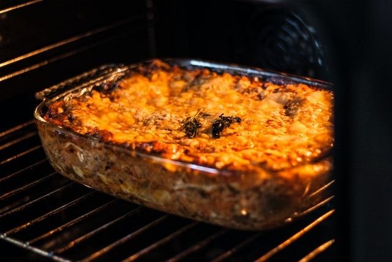

Lasagne végé
Portions: par Pascal
Ingrédients
-
1 t (a verifier) de PVT sec

-
2 oignons
-
2 gousse d'ail
-
1 L de sauce tomate
-
1/2 c. à thé de romarin séché
-
1/2 c. à thé de thym séché
-
1 1/2 c. à thé d'origan séché
-
1/2 c. à thé de flocons de piments
-
1/2 c. à thé de paprika
-
1/2 c. à thé de sriracha en poudre
-
1/2 c. à thé de poivre
-
1 boîte (375 g) de pâtes de lasagne
-
500 mL d'eau
-
250 g de fromage tranché épais
-
beurre
-
farine
-
lait
Instructions
Réhydrater 1 t (a verifier) de PVT sec. Pour se faire, verser le PVT dans un bol. Submerger du double d'eau. Attendre 5-10 minutes que le PVT s'imbibe. Égoutter à l'aide d'une passoire fine. Presser le PVT à l'aide des mains pour faire sortir plus d'eau.
Hâcher les oignons et l'ail.
- 2 oignons
- 2 gousse d'ail
Faire revenir les oignons dans une casserole, puis ajouter l'ail et revenir 1 minute.
Ajouter1 L de sauce tomate et de l'eau pour avoir une sauce pas trop épaisse.
Ajouter les épices et les fines herbes
- 1/2 c. à thé de romarin séché
- 1/2 c. à thé de thym séché
- 1 1/2 c. à thé d'origan séché
- 1/2 c. à thé de flocons de piments
- 1/2 c. à thé de paprika
- 1/2 c. à thé de sriracha en poudre
- 1/2 c. à thé de poivre
Préparer la sauce béchamel...
Dans un bol allant au four, déposer, par étage, en alternant avec la sauce tomate et la sauce béchamel, 1 boîte (375 g) de pâtes de lasagne
Verser 500 mL d'eau dans le plat.
Recouvrir de 250 g de fromage tranché épais.
Suivre les instructions sur l'emballage des pâtes à lasagne pour la cuisson. Cuire à 375 °C pendant 40 à 45 minutes pour des pâtes à lasagne prête à cuire au four.